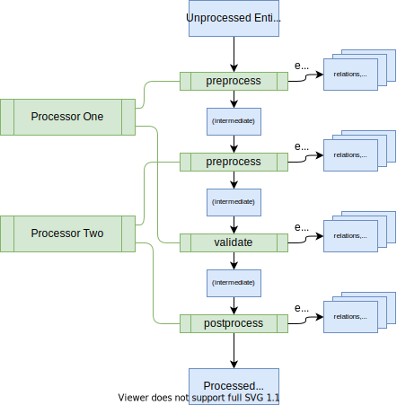
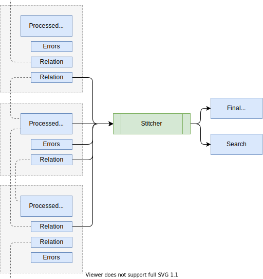

This document gives a high level overview of the catalog backend, and the technical processes involved in making entities flow through it. It is mainly aimed at developers who want to understand the internals while installing or extending the catalog. However, it can be informative for other personas too.
Key Concepts
The catalog forms a hub of sorts, where entities are ingested from various authoritative sources and held in a database, subject to automated processing, and then presented through an API for quick and easy access by Backstage and others. The most common source is YAML files on a standard format, living in version control systems near the source code of systems that they describe. Those files are registered with the catalog and maintained by the respective owners. The catalog makes sure to keep itself up to date with changes to those files.
The main extension points where developers can customize the catalog are:
- Entity providers, that feed initial raw entity data into the catalog,
- Policies, that establish baseline rules about the shape of entities,
- Processors, that validate, analyze, and mutate the raw entity data into its final form.
The high level processes involved are:
- Ingestion, where entity providers fetch raw entity data from external sources and seed it into the database,
- Processing, where the policies and processors continually treat the ingested data and may emit both other raw entities (that are also subject to processing), errors, relations to other entities, etc.,
- Stitching, where all of the data emitted by various processors are assembled together into the final output entity.
An entity is not visible to the outside world (through the catalog API), until it has passed through the last process and landed among the final entities.
The details of these processes are described below.
Ingestion
Each catalog deployment has a number of entity providers installed. They are responsible for fetching data from external authoritative sources in any way that they see fit, translating those into entity objects, and notifying the database when those entities are added or removed. These are the unprocessed entities that will be subject to later processing (see below), and they form the very basis of existence for entities. If there were no entity providers, no entities would ever enter the system.
The database always keeps track of the set of entities that belong to each provider; no two providers can try to output the same entity. And when a provider signals the removal of an entity, then that leads to an eager deletion: the entity and all auxiliary data that it has led to in the database is immediately purged.
There are two providers installed by default: the one that deals with user registered locations (e.g. URLs to YAML files), and the one that deals with static locations in the app-config. You can add more third party providers by passing them to the catalog builder in your backend initialization code, and you can easily write your own.
An entity provider is a class that implements the EntityProvider interface. It
has three main parts:
- The identity: Each provider instance has a unique, stable identifier that the database can use to keep track of the originator of each unprocessed entity.
- The connection: During backend startup, each provider is attached to the catalog runtime.
- The stream of events: During its lifetime, the provider can issue change events to the runtime at any point in time, to modify its set of unprocessed entities.
It is entirely up to the provider to choose how and when it produces these change events. For example, the app-config provider only fires off an update at startup and then lies dormant. The location database provider does an initial update at startup, and then small delta updates every time a location database change is detected. The LDAP provider is driven externally by a timer loop that occasionally triggers a full update. Some future provider may be entirely event driven, feeding off an event bus or web hook. There is no magic coordination among providers; if they need to arrange synchronization or locking among themselves for example to avoid duplicate work across multiple catalog service machines, they need to handle that out-of-band.
The entities that are emitted get some coarse validation applied to them, to
ensure that they at least adhere to the most basic schema rules about how an
entity should be shaped. For example, they need to have a kind, a
metadata.name, and optionally a metadata.namespace, among others. Apart from
that, the ingestion stage considers its work done, and stores the unprocessed
entities to be picked up at a later time by the processing system. This means
that the more precise validation rules that you put in place on entities are
not yet applied at this stage.
Processing
Every unprocessed entity comes with a timestamp, which tells at what time that the processing loop should next try to process it. When the entity first appears, this timestamp is set to "now" - asking for it to be picked up as soon as possible.
Each catalog deployment has a number of processors installed. They are responsible for receiving unprocessed entities that the catalog decided are due for processing, and then running that data through a number of processing stages, mutating the entity and emitting auxiliary data about it. When all of that is done, the catalog takes all of that information and stores it as the processed entity, and errors and relations to other entities separately. Then, the catalog checks to see what entities are touched by that output, and triggers the final assembly of those (see Stitching below).

Entities are always processed one by one, but all of your catalog service hosts collaborate in doing so to distribute the load. Note how each processor can contribute to one or more of the fixed steps in the processing pipeline. First all of the processors' contributions to one step are run in the order that the processors were registered, then all of their contributions to the next step in the same order, and so on.
Each step has the opportunity to optionally modify the entity, and to optionally
emit other information. For example, the processor might look at information in
the spec field of the entity, and emit relations that correspond to those
declarations. If the processor emits an entity, then that entity gets stored
verbatim with a timestamp saying that it, too, should be processed as soon as
possible. If errors are emitted, then that signals that something is wrong with
the entity and that it should not replace whatever previously error-free version
we had among the final entities. If relations are emitted, then they are put in
a dedicated relations table to be picked up by the stitching process below.
Optional low level detail note: When entities are emitted, the catalog keeps track of the edges between the emitting entity and the ones emitted. This happens behind the scenes, hidden from the outside, and is used to form a graph. This is not the same thing as relations! The purpose of these edges, is to be able to detect when an entity becomes orphaned (see below), and to be able to perform eager deletions throughout the graph when a root is explicitly unregistered and nothing else is keeping lower nodes alive. We will talk more about orphaning and deletions later on in this article.
When the final step has completed, and no errors were encountered, the processed entity and all of the relations are finally persisted in the database. Then the catalog considers this entity, and all of the entities it had relations to, subject for stitching.
It is worth noting here that the processing does not lead to deletion or unregistration of entities; it can only call new entities into existence or update entities that it has previously called into existence. More about that later.
Stitching
Stitching finalizes the entity, by gathering all of the output from the previous steps and merging them into the final object which is what is visible from the catalog API. As the final entity itself gets updated, the stitcher makes sure that the search table gets refreshed accordingly as well.
Note: The search table mentioned here is not related to the core Search feature of Backstage. It's rather the table that backs the ability to filter catalog API query results.

The diagram shows how the stitcher reads from several sources:
- The processed entity, as returned from the processing step
- The errors, if any, that were emitted by the processing step
- All relations that were emitted by the processing step, as well as any relations emitted by other entity processing steps that happen to point at the current entity
The last part is noteworthy: This is how the stitcher is able to collect all of the relation edges, both incoming and outgoing, no matter who produced them.
The stitching is currently a fixed process, that cannot be modified or extended. This means that any modifications you want to make on the final result, has to happen during ingestion or processing.
Errors
Errors during the ingestion and processing of entities can happen in a variety of ways, and they may happen at a far later point in time than when they were registered. For example, a registered file may get deleted in the remote system, or the user may accidentally change the file contents in such a way that they cannot be parsed successfully, etc.
There are two main ways that these errors are surfaced.
First, the catalog backend will produce detailed logs that should contain sufficient information for a reader to find the causes for errors. Since these logs are typically not easily found by end users, this can mainly be a useful tool for Backstage operators who want to debug problems either with statically registered entities that are under their control, or to help end users find problems.
Second, for most classes of errors, the entity itself will contain a status
field that describes the problem. The contents of this field is shown at the top
of your entity page in Backstage, if you have placed the corresponding error
callout component (EntityProcessingErrorsPanel) there.
We are still working to improve the surfacing and observability around processing loop errors.
Orphaning
As mentioned earlier, entities internally form a graph. The edges go from processed parent entities, to child entities emitted while processing the parent.
The processing loop runs continuously, so these edges are reconsidered over time. If processing a parent entity no longer emits a given child entity, then that former edge is severed. If that child has no other edges pointing at it either, it becomes orphaned. The end result is as follows:
- The stitching process injects a
backstage.io/orphan: 'true'annotation on the child entity. - The child entity is not removed from the catalog, but stays around until explicitly deleted via the catalog API, or "reclaimed" by the original parent or another parent starting to reference it.
- The catalog page in Backstage for the child entity detects the new annotation and informs users about the orphan status.
Orphaning can occur in several different scenarios.
- If a catalog-info YAML file is moved from one place to another in the version control system without updating the registration in the catalog, it will effectively become orphaned "by" that registered location
- If the user edits a corresponding parent catalog-info YAML file removing the
entity's entry - for example in the case of a
Locationparent entity, orphaning can happen if editing or removing thetarget/targetslines pointing to the file containing the child entity. - Another common cause is large batch processors such as the ones that crawl
through remote systems looking for entities, no longer finding something that
it used to find before. Maybe the data was moved, or deleted, in the remote
system. So for example when a person leaves the company an LDAP org discovery
processor might leave an orphaned
Userentity behind. Note that this only applies to processors - ingestion that happens using entity providers work differently, described below.
Note that removing a file, or accidentally corrupting a file so that it cannot be read successfully, does not lead to orphaning. Hard errors, including the inability to find or read a distinct remote, are marked as such on the entity to inform the owner that something is wrong. But processing and other behaviors continue as usual.
The reason that the orphaning mechanism exists instead of having an eager deletion triggered, is safety. Scenarios like these can happen purely by accident, due to the asynchronous nature of the system and the fallible nature of humans. In particular when external systems start consuming and relying on the catalog, there could be substantial consequences to suddenly dropping entities without explicit owner consent. The catalog therefore takes the stance that entities that often were added by direct user action should also be deleted only by direct user action.
It is possible to use the catalog API to build automated "reaper" systems that finally delete entities that are orphaned. This is however not something that's provided out of the box.
Implicit Deletion
Entity providers - not processors - are subject to eager deletion of entities, which may trigger the implicit deletion of more than just the entity you thought you were deleting. This concept is explained here.
Recall that all entity providers manage a private "bucket" of entities, as described in the External integrations article. They can perform some operations on those entities, including additions, updates, and deletions. Entity additions/updates are subject to the regular processing loops, which means that bucket entities may end up forming roots of an entire graph of entities that are emitted by those processors as they recursively work they way through the bucket contents and its descendants.
When a provider issues a deletion of an entity in its bucket, that entity as well as the entire tree of entities processed out of it, if any, are considered for immediate deletion. Note "considered" - they are deleted if and only if they would otherwise have become orphaned (no other parent entities emitting them). Since the graph of entities is not strictly a tree, multiple roots may actually end up indirectly referencing a node farther down in the graph. If that's the case, that node won't go away until all such roots go away.
URLs to yaml files that you register using either the Create button or add to your app-config, are both handled by entity providers. That means that this implicit deletion mechanism comes into play in some everyday circumstances. Let's illustrate.
Imagine that you have a monorepo, with a single Location entity in a
catalog-info file at the root, and that entity points to three other
catalog-info files in the repo with a Component entity in each one.
/
feature_one/
catalog-info.yaml <- kind: Component
feature_two/
catalog-info.yaml <- kind: Component
feature_three/
catalog-info.yaml <- kind: Component
catalog-info.yaml <- kind: Location
If you register the root Location entity, the actual effect is that five
entities appear in the catalog. First, one that is named generated--something,
which corresponds to the registered URL itself. That's the one that the provider
has put in its "bucket". Then, as processing loops chug along, the Location
entity you pointed to appears as a child of that, and then the three Component
entities appear in turn as children of the Location.
As an end user of the Backstage interface, you may now want to delete one of the
three Component entities. You do that by visiting the three-dots menu in the
top right of an entity view. The popup dialog that appears will inform you that
actually this entity belongs to a certain root, and that you may want to remove
that root instead (which corresponds to unregistering the originally registered
URL). If you choose to do so, all of the aforementioned five entities will
actually be deleted in the same operation.
If you did not want to perform this aggressive pruning, you might have instead
chosen to remove one of the target rows of your Location catalog-info file,
and then deleted the catalog-info file that contained the Component you wanted
to get rid of. Now the catalog would be left with an orphaned component, and you
would instead be able to use the explicit deletion (see below) to delete that
single component.
Explicit Deletion
The catalog and its REST API also permits direct deletion of individual entities. This makes sense to do on orphaned entities; entities that aren't being actively kept up to date by any parent entities. The popup interface under the three-dots menu option of entity views does offer this option, and the orphaned status can be seen in an info box at the top of the entity's overview page.
However, if you were to try to do an explicit depletion on an entity that's being kept actively updated by a parent entity, it would just reappear again shortly thereafter when the processing loops reconsider the parent entity that's still in there.